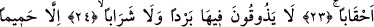
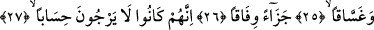
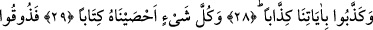
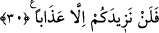

CEHENNEM PUSUDA
BEKLEMEKTEDİR
21. Şüphesiz cehennem pusuda beklemektedir.
22. Azgınların barınağı olacak
23. (Azgınlar) orada çağlar boyu kalırlar.
24. Orada bir serinlik ya da (susuzluk gideren) bir içecek tatmazlar.
25. Ancak kaynar su ve irin tadarlar.
26. (Dünyada yaptıklarına) uygun karşılık olarak.
27. Çünkü onlar hesap gününü (geleceğini) ummazlardı.
28. Bizim âyetlerimizi yalanladıkça yalanlamışlardı.
29. Biz ise her şeyi bir kitapta sayıp yazmışızdır.
30. Tadın! Bundan sonra yalnızca azâbınızı arttıracağız.
“Şüphesiz cehennem pusuda beklemektedir.” Yâni cehennem Allah Teâlâ’nın hükmü
ve takdirinde bir gözetleme yeridir. Cehennemin zebânîleri orada azab etmek için
kâfirleri gözetlerler.
Âyetteki “mirsad” kelimesi, ism-i mekan olup “üzerinde gözetleme işleminin yapıldığı
yer” demektir. Tıpkı “girilen yol” anlamına ism-i mekan kalıbıyla “minhâc” dendiği
gibi.
Râğıb “mirsâd” kelimesini açıklarken bunun tıpkı “mirsed” gibi gözetleme yeri
anlamına geldiğini fakat bu “mirsâd” kelimesinin özellikle gözetlemeye tahsis edilen yer
anlamında olduğunu belirtir. Azgınların barınağı olan cehennemin bir gözetleme yeri
olduğunu haber veren bu âyet-i kerîme, cehennemin bütün insanların mutlaka gelip
uğrayacakları bir yer olduğu noktasında uyarı anlamı ifâde etmektedir. Bu açıklamasına
bakılırsa Râğıb’ın, “mirsâd” kelimesini genelleştirmiş olduğu görülüyor. Nasıl ki sırat
Allah düşmanlarının takılıp kalacakları, Allah dostlarının ise üzerinden geçecekleri bir
yer ise cehennemi de aynı şekilde tasavvur ediyor. Ancak birinci anlam bize göre daha
uygun gelmektedir. Çünkü böylesi korkunç bir yerde gözetleme ancak ve ancak azab